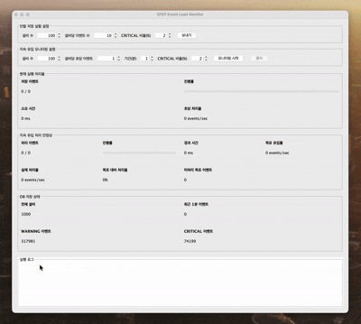
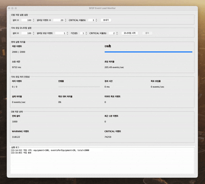
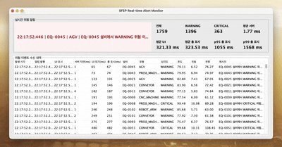
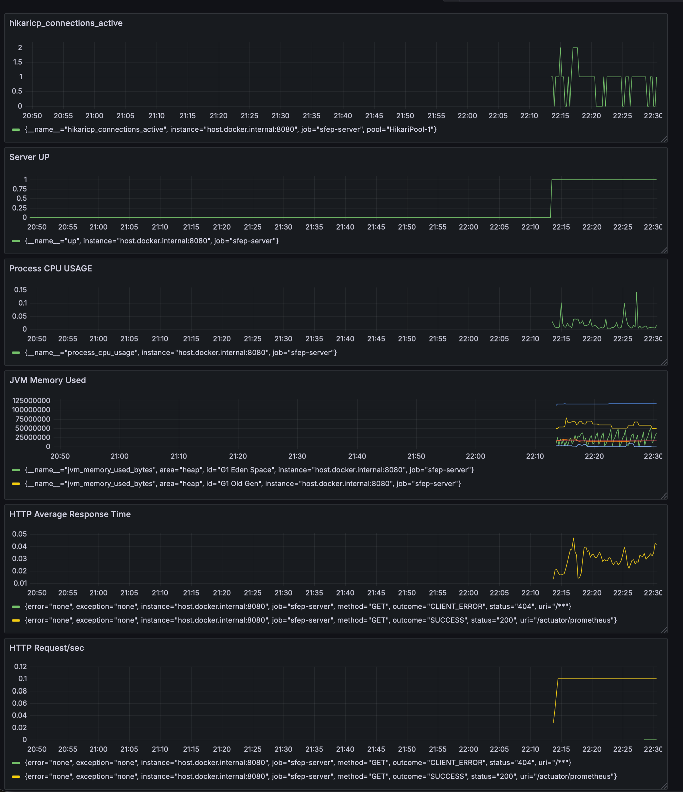
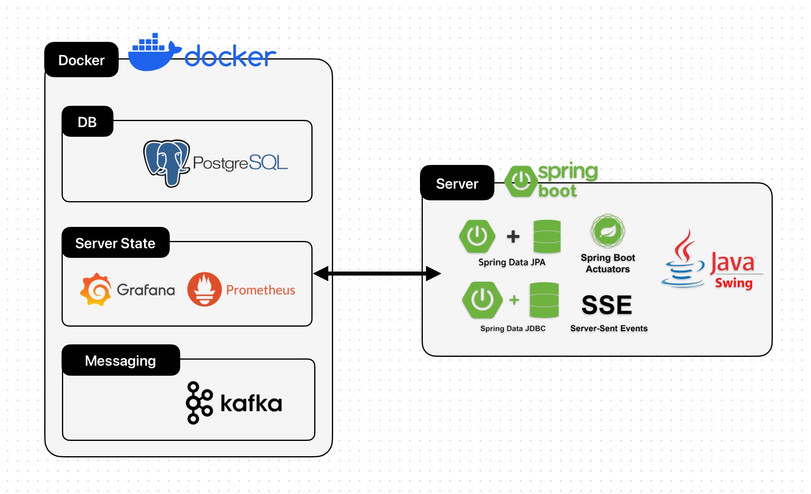
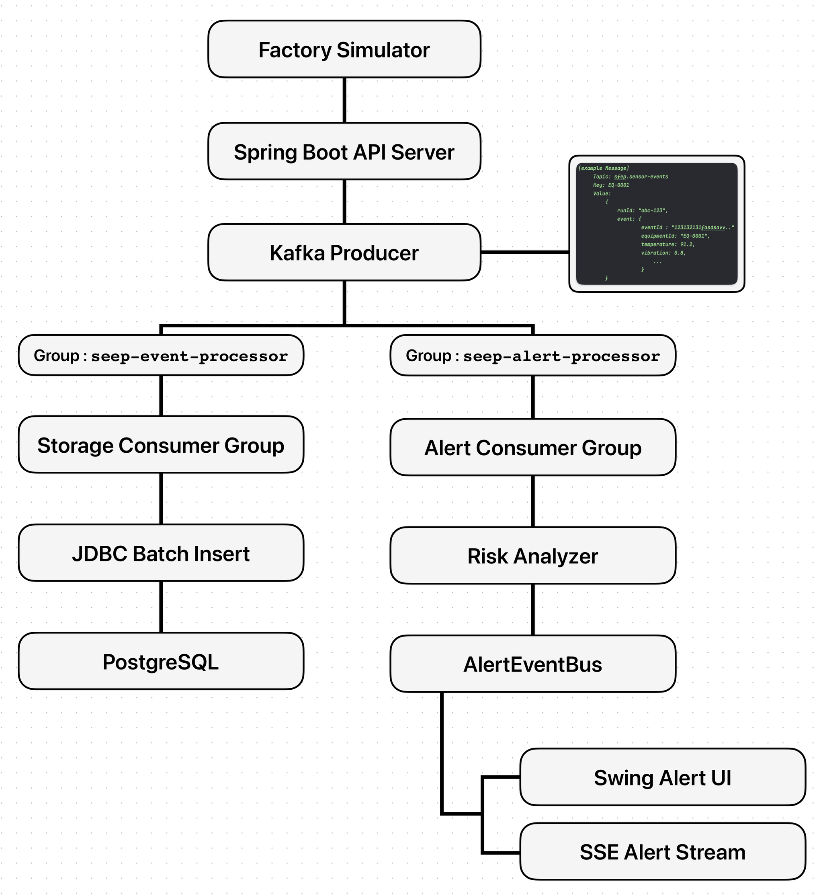

개요
SFEP(Smart Factory Event Processing System)는 제조 설비에서 발생하는 대규모 센서 이벤트를 수집, 저장, 분석하고 AI 기반으로 고장 위험도를 예측하는 이벤트 처리 시스템입니다.
단순 CRUD 서비스가 아니라, 설비 수와 이벤트 발생량이 증가했을 때 발생하는 DB 병목, Consumer 처리 지연, 알림 지연 문제를 단계적으로 개선하며 확장 가능한 백엔드 구조를 검증했습니다.
AI4I 제조 설비 데이터를 기반으로 고장 예측 모델을 학습하고, ONNX로 변환해 Spring 서버에서 직접 추론하도록 구성했습니다.
프로젝트 시연




설비 이벤트 시뮬레이터
- Swing 기반 시뮬레이터로 실제 제조 설비를 대신하는 가상 설비 이벤트 생성
- 설비 수, 설비당 이벤트 수, 장애 비율을 사용자가 직접 설정해 이벤트 생성
실시간 처리 성능 모니터링
- 단발성 이벤트뿐 아니라 특정 시간 동안 일정한 이벤트를 지속적으로 발생시키는 구조 추가
- 실제 운영 환경과 유사한 지속 트래픽 처리 안정성 확인
AI 기반 고장 위험 예측 기반 실시간 위험 설비 알림
- AI4I 제조 설비 데이터 기반 고장 예측 모델 학습
- 설비별 최근 50개 이벤트를 Rolling Window로 묶고 평균, 최대, 최소, 표준편차, 추세 등 52개 Feature 생성
- ONNX 모델로 고장 확률을 예측하고 설비별 위험 상태를 Normal, Warning, Critical로 표시
- 별도 Swing Frame에서 실시간 위험 설비 상태와 서버 지연 시간 지표 확인
모니터링 지표
- Server UP
- HTTP Requests/sec
- HTTP Average Response Time
- JVM Memory Used
- Hikari DB Connection
- Process CPU Usage
핵심 성과
- 100,000건 이벤트 처리 시간 53,611ms에서 1,849ms로 개선
- 저장 처리율 933 events/sec에서 27,056 events/sec로 개선
- Kafka Consumer 병렬화 후 최대 50,000 events/sec 처리 확인
- Alert Consumer 분리 후 p95 알림 지연 6,959ms에서 1,926ms로 개선
- AI 기반 고장 예측 모델 Spring 서버 연동
- 고장 예측 모델 F1-score 0.8889, ROC-AUC 0.9740 달성
- Prometheus/Grafana 기반 모니터링으로 성능 개선 실험의 병목 분석 가능
역할
- Spring Boot 기반 백엔드 아키텍처 설계
- 대규모 이벤트 생성 시뮬레이터 구현
- Kafka Producer/Consumer 기반 비동기 이벤트 처리 구조 설계
- Consumer Group 병렬 처리 및 Batch Insert 성능 개선
- 알림 Consumer 분리를 통한 실시간 알림 지연 개선
- JDBC Batch Insert 기반 대량 저장 성능 개선
- Hikari Connection Pool, Consumer Concurrency, Kafka Poll 설정 튜닝
- AI4I 데이터 기반 고장 예측 모델 학습
- ONNX 모델을 Spring 서버에 연동해 실시간 추론 구현
- Swing 기반 실시간 모니터링 및 위험 설비 시각화 UI 구현
- Prometheus/Grafana 기반 운영 지표 확인 구조 구성
시스템 아키텍처


기술 스택
| Category | Stacks |
|---|---|
| Backend | Spring Boot, Spring Web, Spring Kafka, Spring JDBC Batch, Spring Actuator, ONNX Runtime |
| Messaging | Apache Kafka, Consumer Group, Kafka Partition, SSE, Swing Event Bus |
| AI / Model | AI4I 2020 Predictive Maintenance Dataset, Rolling Window Feature Engineering, Scikit-learn, ONNX |
| Database | PostgreSQL |
| Monitoring | Prometheus, Grafana, Micrometer |
| Infra / Tools | Docker Compose, Git |
개선 사항
Direct DB Write 구조에서 발생한 저장 병목
상황 1초기 구조에서는 시뮬레이터가 생성한 이벤트를 Spring 서버가 PostgreSQL에 직접 저장했습니다. 구현은 단순했지만 대량 이벤트가 한 번에 들어오면 요청 처리와 DB 저장이 강하게 결합되고, 이벤트 수가 증가할수록 Insert 횟수, Connection Pool 사용량, 트랜잭션 처리 시간이 병목이 되었습니다.
100,000건 이벤트 처리 기준 Direct DB Write 방식은 53,611ms가 소요되었고, 처리율은 933 events/sec 수준이었습니다.
Kafka를 도입해 이벤트 수집과 저장 흐름을 분리하고, Consumer가 이벤트를 비동기적으로 처리하도록 변경했습니다. 이후 Batch Insert를 적용해 1건씩 저장하던 구조를 여러 이벤트 단위로 묶어 저장하도록 개선했습니다.
100,000건 이벤트 처리 시간을 96.5% 줄였고, 저장 처리율은 기존 대비 약 2,800% 향상했습니다.
| 방식 | 처리 시간 | 처리율 |
|---|---|---|
| Direct DB Write | 53,611ms | 933 events/sec |
| Batch Insert | 1,849ms | 27,056 events/sec |
단일 Consumer 처리 구조의 처리량 한계
상황 2Kafka를 도입하더라도 Consumer가 단일 처리 구조이면 Topic에 쌓인 이벤트를 빠르게 처리하기 어렵습니다. 이벤트 생산 속도가 소비 속도보다 빨라지면 Consumer Lag이 증가하고 실시간 처리성이 떨어질 수 있었습니다.
Kafka Topic Partition을 6개로 두고 Consumer Concurrency를 3으로 조정해 병렬 처리 구조를 적용했습니다. 이후 max.poll.records, Batch Size, Hikari Connection Pool 설정을 조합해 대량 이벤트 처리 실험을 반복했습니다.
저장 처리와 위험 알림 처리가 같은 흐름에 묶이는 문제
상황 3위험 이벤트 알림이 DB 저장 흐름에 함께 묶이면 DB 저장이 느려지는 순간 알림 전달도 함께 지연될 수 있습니다. 설비 과열, 진동 이상, 전류 급증 같은 이벤트는 DB에 저장되는 것보다 운영자가 빠르게 인지하는 것이 더 중요했습니다.
Kafka Consumer Group을 저장 Consumer와 알림 Consumer로 분리했습니다. 같은 센서 이벤트를 각각 독립적으로 소비하도록 구성하고, 알림 전달은 AlertEventBus와 별도 Thread Pool을 통해 비동기로 처리했습니다.
| 항목 | p95 알림 지연 |
|---|---|
| 저장 흐름 중심 처리 | 6,959ms |
| Alert Consumer 분리 후 | 1,926ms |
Rule-Based 위험 판단의 한계
상황 4초기 위험 판단은 온도, 진동, 토크 등 특정 값이 임계치를 넘으면 Warning 또는 Critical로 판단하는 Rule-Based 방식이었습니다. 하지만 제조 설비의 고장 위험은 단일 값보다 여러 센서 값의 조합과 최근 변화 흐름을 함께 보는 것이 더 적합했습니다.
AI4I 2020 Predictive Maintenance Dataset을 활용해 고장 예측 모델을 학습했습니다. 설비별 최근 50개 이벤트를 Rolling Window로 관리하고 52개 Feature를 생성해 모델에 입력했습니다. Spring 서버에서는 ONNX Runtime으로 모델을 직접 로드하고 실시간으로 failure_probability를 계산하도록 구현했습니다.
| 항목 | 값 |
|---|---|
| Accuracy | 0.9930 |
| 고장 Precision | 0.9655 |
| 고장 Recall | 0.8235 |
| 고장 F1-score | 0.8889 |
| ROC-AUC | 0.9740 |
| PR-AUC | 0.9088 |
성능 개선 실험을 검증할 운영 지표 부족
상황 5초기 성능 측정은 Swing UI에 표시되는 처리 시간과 서버 로그 중심으로 이루어졌습니다. 전체 처리 시간과 초당 처리율은 확인할 수 있었지만, 처리 중 서버 내부에서 어떤 자원이 병목이 되는지 파악하기 어려웠습니다.
Spring Actuator, Prometheus, Grafana를 도입해 서버 운영 지표를 수집하고 시각화했습니다. Spring Boot는 /actuator/prometheus 엔드포인트로 JVM, HTTP 요청, DB Connection, CPU 사용량 등의 메트릭을 노출하고, Grafana에서 대량 이벤트 처리 실험 중 서버 자원 사용량까지 함께 확인했습니다.
결과 및 소감
이 프로젝트를 통해 단순히 기능을 구현하는 것보다 병목을 수치로 확인하고 구조적으로 개선하는 과정이 중요하다는 점을 배웠습니다. 초기 Direct DB Write 구조는 구현은 단순했지만 100,000건 이벤트 처리 시 약 53초가 소요되어 대규모 이벤트 처리에는 적합하지 않았습니다.
이후 Kafka를 도입해 수집과 저장을 분리하고, Consumer 병렬화와 JDBC Batch Insert를 적용하면서 처리량을 단계적으로 개선할 수 있었습니다. 또한 저장 처리율만 보는 것이 아니라 위험 이벤트가 운영자에게 도착하기까지의 알림 지연 시간을 측정하면서, 실시간 시스템에서는 저장 성능과 알림 실시간성을 분리해서 바라봐야 한다는 점을 체감했습니다.
마지막으로 Prometheus와 Grafana를 통해 서버 내부 지표를 함께 확인하면서, 성능 개선은 단순히 빠르게 만드는 것이 아니라 어떤 병목을 어떤 지표로 확인했고 어떤 구조로 개선했는지 설명할 수 있어야 한다는 점을 배웠습니다.